M A N G A I M A G E S
Below are some images I have selected from the manga. If you are going to take some, please have a link back to Broken Echo, thanks and enjoy.
 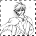 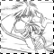 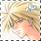 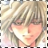
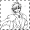 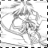 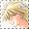 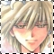
-----------------------------------------
Broken Echo is an AinoyumeNET production. Pretear was created by Kaori Naruse and Junichi Sato, © 2001. All rights reserved.
Below are some images I have selected from the manga. If you are going to take some, please have a link back to Broken Echo, thanks and enjoy.
 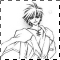 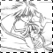 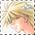 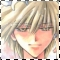
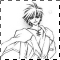 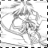 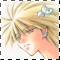 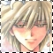 Broken Echo is an AinoyumeNET production. Pretear was created by Kaori Naruse and Junichi Sato, © 2001. All rights reserved.